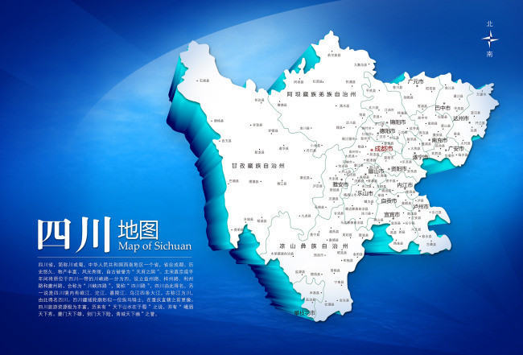

-
各省由来

-
北京
战国时期称蓟，是「战国七雄」之一燕国的京城。辽国称燕京。金国改称京都。元朝称大都。明朝永乐帝朱棣又从南京把国都搬迁过来，并下令在大都城址上重新建造了都城，并把都城定名北京。从此北京这个名称出现了。简称京。
-
天津
明朝，燕王为争夺皇帝位，在这里发兵渡河南下，打败他的侄子明惠帝而篡了位。为纪念在这里渡河起兵，所以称「天津」，意即天子经过的渡口，简称津。
-
上海
北宋初期，这里已形成居民点，从这里上海洋，所以称上海。上海原来是捕鱼的地方，当时渔民创造了一种捕鱼工具，叫「邕」（它是由竹子编成，插在水中），后来邕改为沪，所以上海简称沪。
-
黑龙江省
以黑龙江而得名。清分吉林将军置黑龙江将军，清末改黑龙江省，省名至今未变。因为江水呈黑绿色，蜿蜒地流着象条游龙。简称黑。
-
吉林省
清朝在松花江沿岸建立吉林乌拉城（今吉林市），满语吉林是『沿』的意思，乌拉是「大川」的意思。就是沿着松花江的城市。唐属东北民族地；辽属东京路；金属上京路；元属辽阳行省；明属奴儿干都司 ；清设吉林将军，清末改吉林省，后来建省时，就用它命名叫吉林省。简称吉。
-
辽宁省
以辽河流域永久安宁得名。唐属河北道；辽置东京路；金仍之；元置辽阳行省；明为辽东都司；清设辽东将军，后改奉天将军，再改盛京将军，清末改奉天省；1929民国改辽宁省，为辽宁得名的开始；伪满复改奉天省，1945收复后仍改辽宁省；建国初分辽东省和辽西省，后合并恢复辽宁省，省名至今未变。由于它在辽河流域，取辽河永久安宁之意，简称辽
-
河北省
以在黄河之北而得名。唐大部分属河北道(黄河以北，太行山以东地区)，为河北得名的开始。宋设河北路，后分河北东、西路；金分河北东路设大名府路；元设燕南赵北道；明设北平省，后废省，所有府和直隶州直属中央，称北直隶；清改直隶省；1929年民国改河北省，省名至今未变。因代属冀州地区，所以简称冀。
-
河南省
以在黄河之南而得名,主要部分在黄河以南。西汉即有河南郡，为河南得名的开始。唐大部分属都畿道和河南道；宋设京畿路和京西北路；金改南京路；元设河南江北省和河南江北道；明置河南省，后改河南布政使司；清改河南省，省名至今未变。，因为古代属豫州地区，所以简称豫
-
山西省
以在太行山之西而行名。唐大部分属河东道；宋设河东路；金分河东北、南路；元设山西河东道，为山西得名的开始；明置山西省，后改山西布政使司；清改山西省，省名至今未变。春秋时是晋国领土，所以简称晋。
-
山东省
以在太行山之东而得名。唐大部分属河南道；宋设京东路，后分京东东、西路；金更名山东东、西路，为山东得名的开始；元设山东东西道；明置山东省，后改山东布政使司；清改山东省，省名至今未变。春秋时是鲁国领土，所以简称鲁。
-
湖南省
以在洞庭湖之南而得名。唐属江南西道和黔中道，后设湖南观察使，为湖南得名的开始；宋称湖南路；元设岭北湖南道；明属湖广省，后改省为湖广布政使司；清分湖广省置湖南省，省名至今未变。由于湘江纵贯全省，所以简称湘。
-
湖北省
以在洞庭湖之北而得名。唐属江南东道、淮南道和山南东道；宋荆湖北路，简称湖北路，为湖北得名的开始；元设江南湖北道；明属湖广省，后改为省为湖广布政使司；清分湖广省置湖北省，省名至今未变。清朝时省会武昌属鄂州管辖，所以简称鄂。
-
浙江省
以浙江(又称钱塘江)得名。唐属江南东道，设浙东观察使和浙西观察使；宋置两浙路，南宋又分两浙东路和两浙西路，简称浙东路和浙西路；元设浙东海右道和江南浙西道；明设浙江省，为浙江得名的开始，后改浙江布政使司；清改浙江省，省名至今未变。境内的浙江盘回曲折，浙江就是富春江。简称浙。
-
江西省
以江南的西部得名。唐属江南西道，后设江西观察使，为江西得名的开始；宋置江南西路，简称江西路；元设江西行省及江西湖东道；明置江西省，后改江西布政使司；清改江西省，省名至今未变。因赣江纵贯全省，所以简称赣。
-
陕西省
是指现在的河南省陕县西南陕陌以西的地区称陕西。简称陕。古代时是秦国领土，又简称秦。
-
安徽省
以清朝时的安庆府（今安庆）和徽州府（今歙县）的头一字组成。唐大部属江南西道和淮南道；宋置江南东路和淮南西路；元属江东建康道和淮西江北道；明境内各府和直隶州直属中央，称为直隶，后改南直隶；清改江南省，后分设安徽省，为安徽得名的开始；民国仍之；建国初分设皖北行署和皖南行署，后合并恢复安徽省，省名至今未变。因境内有皖山（天柱山），因而简称皖。
-
江苏省
以江宁、苏州各取一字得名。唐大部属江南东道和淮南道；宋置江南东路、两浙西路和淮南东路；元属江东建康道、江南浙西道、淮东江北道；明境内各府和直隶州直属中央，称为直隶，后改南直隶；清改江南省，后分设江苏省 ，为江苏得名的开始；民国仍之；建国初分设苏北行署和苏南行署，后合并恢复江苏省，省名至今未变。简称苏。
-
甘肃省
以甘州、肃州各取一字得名。唐属关内道和陇右道；宋时东部属宋秦凤路，西部属西夏；金分秦凤路为秦凤、临洮、庆原三路；元初以甘州置甘肃路(不久即改甘州路)，为甘肃得名的开始，后改宁夏行省为甘肃行省；明为陕西行都司；清分陕西省恢复甘肃省，省名至今未变。 是以古代甘州（今长掖），肃州（今酒泉）的头一个字组成，简称甘。境内的六盘山又叫陇山，故又简称陇。
-
贵州省
以贵山得名。唐为黔中道；宋属夔州路；元属湖广行省；明置贵州土司，是为贵州得名的开始，后置贵州布政使司；清改贵州省，简称贵。因古代属黔中郡，所以简称黔。
-
四川省
唐朝初年现在的四川省剑阁以南设东川，西川。这里的川，是平川广野的意思。宋代分设益州，榨州、利州、州四路，合称『川峡四路』，简称四川，元朝设四川省，简称川。三国时是蜀国领土，所以简称蜀。
 -
云南省
以在云岭之南得名。汉即设云南县，为云南得名的开始。唐为六诏，后为南诏；宋为大理国；元置云南行省及云南诸路道；明置云南省，后改云南布政使司；清改云南省，省名至今未变。 相传汉武帝时有人在白崖看见彩云，派人追 彩云到这里，因为设立的县在彩云的南边，所以叫云南，简称云。因为昆明附近是古代滇国，故又简称滇。
-
广东省
以广南东路简称得名。唐属岭南道；宋以旧广州辖地置广南东路，简称广东路，为广得名的开始元设海北广东道；明置广东省，后改广东布政使司；清改广东省，省名至今未变。因为古代是百越（粤）地区，所以简称粤。
-
广西壮族自治区
以广南西路简称得名。唐属岭南道；宋置广南西路，简称广西路，为广西得名的开始；元设广西两江道；明置广西省，后改广西布政使司；清改广西省；民国仍之；建国后改广西壮族自治区，区名至今未变。1958年建广西壮族自治区，因古代是桂林郡，故简称桂。
-
福建省
古代设福州、建州、泉州、漳州、汀州五个州，以福州、建州各取一字得名。唐属江南东道，后设福建观察使，为福建得名的开始；宋置福建路；元设福建海右道；明置福建省，后改福建布政使司；清改福建省，省名至今未变。明朝设福建省，因是闽族人居住地区，所以简称闽。
-
台湾省
古代台湾称「夷州」或「流求」，又称「东番」、「北港」、「大员」、「大湾」，后来又改为「台湾」,以台湾府得名。唐宋均为化外地；元在澎湖设巡检司，兼管台湾渔民；明为荷兰所占，明末郑成功收复，设东宁省及承天府；清郑氏，设台湾府及台厦道，是为台湾得名的开始，并正式称台湾岛，后改台厦道为台湾道；清末设台湾省，后为日占，仍称台湾；民国收复，恢复台湾省,简称台。
-
青海省
以青海湖得名。唐宋属吐蕃；元其土地属宣政院管辖；明属朵甘都司等；清初为卫藏地，后分设西宁办事大臣，又称青海办事大臣，为青海得名的开始；民国初设青海办事长官，后属甘边宁海镇守使，1928年建青海省，简称青。
因青海湖而得名。1928年建青海省，简称青。
-
宁夏回族自治区
以西夏安宁得名。唐属关内道；宋时属西夏；元灭西夏后以旧地设西夏行省，不久改宁夏行省，治所为宁夏路，为宁夏得名的开始，后改行省为甘肃行省，迁甘州路。明属陕西省，改宁夏路为宁夏卫； 清改宁夏府，属甘肃省，并设宁夏将军；民国初设甘边宁夏护军使，1928年设宁夏省；建国后撤消并入甘肃省，1958年设宁夏回族自治区，简称宁。
-
西藏自治区
元朝、明朝称西藏地区为乌斯藏，「乌斯」是藏语「中央」的意思，藏是「圣洁」的意思。因为它在中国西部，称西藏。1965年成立西藏自治区，简称藏。
-
新疆维吾尔自治区
古代称西域，公元前一世纪起，成为汉王朝的一部分，因为是新开辟的疆土，习惯上称新疆。清光绪年间设置新疆省，解放后成立新疆维吾尔自治区，简称新。
-
内蒙古自治区
以漠南蒙古得名。唐为突厥地；宋时出现蒙古部落；后建元朝，其地直属中书省及岭北行省；明分达靼鞑及瓦剌；清统一蒙古，以漠南蒙古居内地称内蒙古，漠北蒙古居边外称外蒙古，并属理藩院。清朝时，为区别外蒙古，习惯上称为内蒙古。1947年成立内蒙古自治区。简称内蒙古，是所有简称中最长的一个

-
海南
以海南岛得名。唐属岭南道；宋属广南西路；元设海南海北道，是为海南得名的开始；明属广东省；清仍之，正式称琼崖为海南岛；民国仍之，后设海南特别行政区，仍属省；建国后设海南行政区，仍属省，1988升海南省，